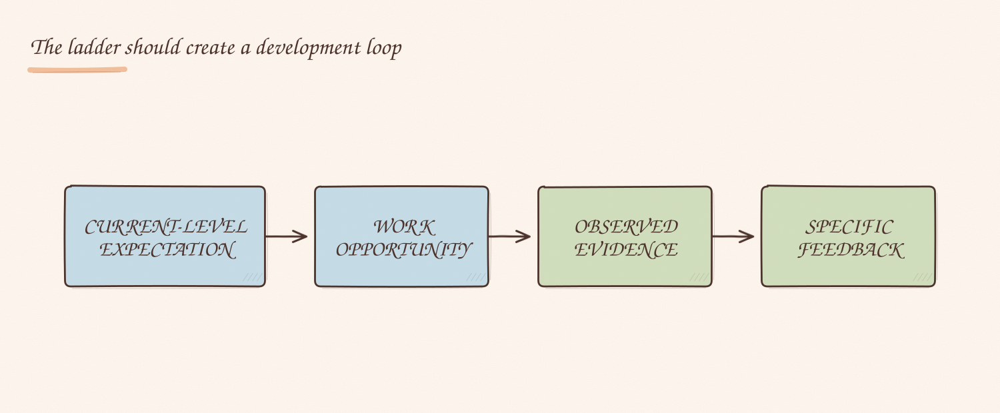
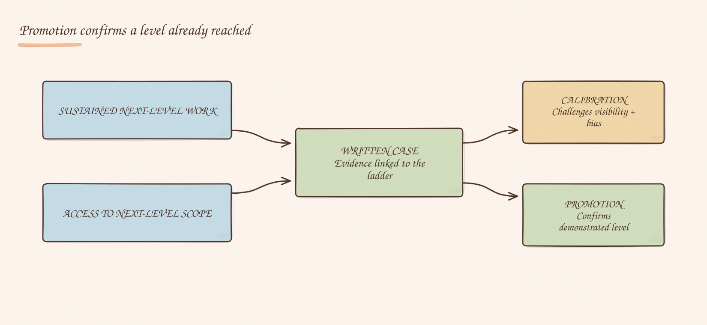

Most employees do not need another table full of competencies. They need clear answers.
A career ladder should answer those questions before a performance review or promotion discussion. Its value is not in describing increasingly impressive people. Its value is in making expectations and decisions less dependent on who happens to be managing you.
Poor ladders create a different problem. They become promotion checklists, encourage people to collect visible activities and give managers a document to point at without making their judgment any clearer. People learn to gather mentoring sessions, presentations and cross-team meetings as evidence, even when none of them changed an outcome.
More detail does not automatically create more fairness. The useful test is simpler: does the ladder make a difficult career decision easier to explain?
A level describes the work, not the person's worth
Career ladders often mix several things together: skill, scope, autonomy, influence, delivery and leadership. That is reasonable. The problem begins when a higher level is treated as proof that someone is more valuable, more committed or more important.
A level should describe the work a person is consistently able to do. It should explain the complexity they can handle, the decisions they can own, the impact they can have and the amount of support they need. It is not a ranking of human worth.
This distinction matters because growth does not always mean promotion. Someone may deepen their expertise at the same level, move to a different team, explore management, return to individual contribution or choose a narrower scope for a period of time. A ladder that recognises only upward movement turns every career conversation into a negotiation for the next title.
At senior levels this becomes especially damaging. The organisation still needs experienced engineers who solve hard problems without continually expanding their organisational reach. If the only recognised growth is management or ever-wider influence, the ladder pushes people away from the work they are best at.
Expectations need to survive contact with real work
Most ladders use sensible dimensions: scope, technical skill, execution, impact, communication and leadership. Managerial ladders add delivery, team structure, hiring and people support.
Those dimensions are useful as a common language. They are not yet expectations.
“Demonstrates leadership” can mean mentoring a colleague, driving a technical decision, resolving a dependency, setting direction for several teams or managing people. “Has organisational impact” is even less useful without context. Two managers can read the same phrase and apply completely different standards.
The manager's job is to translate the ladder into the work available to the person:
This translation cannot wait for review season. If an employee first learns what “senior” meant to their manager while being told they did not meet the bar, the document did not create transparency.
Opportunity is part of the evidence
Performance systems often evaluate demonstrated capability without examining available opportunity.
An engineer cannot demonstrate cross-team leadership if every cross-team decision is retained by the lead. A new manager cannot show that they can handle a difficult people conversation if their director steps into every difficult situation. Someone cannot own an outcome if priorities change without their involvement and the important decisions happen elsewhere.
This does not mean employees receive credit for capabilities they have not demonstrated. It means the manager has two responsibilities: assess the evidence and create reasonable opportunities to produce it.

Evidence: decisions, delivery, risk communication and production follow-through.
Evidence: written options, stakeholder alignment and the resulting decision.
Evidence: increased independence and feedback from both participants.
Promotion should confirm sustained next-level work
The cleanest promotion standard I have used is that the person is already operating at the next level. Promotion confirms a level reached; it is not a bet that the title will cause the growth.
“Already operating” does not mean performing every line of the next level perfectly. Ladders are not bingo cards. It means the evidence shows sustained next-level scope and impact, rather than one heroic project or a few highly visible moments.
The manager also has to provide reasonable access to that scope. We cannot demand next-level evidence while keeping every next-level decision elsewhere.

A written promotion proposal improves the decision. The manager has to state the current and proposed level, connect the case to published expectations and show concrete outcomes over time. The written case can then be challenged during calibration.
This is better than a hallway decision, but the document is not the source of fairness by itself. A confident writer can produce a stronger case than a hesitant one. Some projects generate clearer metrics and more executive visibility than others. Managers differ in how readily they advocate for their reports.
Calibration should ask whether comparable evidence is being judged comparably, whether the person had access to the required scope and whether visibility is being mistaken for impact.
The process should also separate three decisions that are often conflated:
Combining them makes both the career and compensation logic harder to explain.
A missing rung can hide real leadership
In one engineering organisation I worked with, two managers were supporting a team large enough that senior engineers had already taken on substantial informal leadership. They were mentoring, unblocking reviews, sharing context and providing feedback, but the formal ladder offered a sharp jump from senior individual contributor to full engineering manager.
The work existed. The ladder could not name it.
We introduced an Associate Engineering Manager rung with a deliberately limited shape: two or three reports, roughly 80 percent individual contribution and 20 percent management, with an experienced manager retaining support and escalation responsibility.
This solved more than span of control. It gave engineers a way to try management without making one large career jump. It made expectations explicit for work that had previously depended on goodwill. It also gave the organisation a way to recognise leadership that was already happening.
Adding a level carries a cost. Titles can create status games, inconsistent appointments and pressure to reproduce the same structure across teams that do not need it. I would add a rung only when the responsibilities already exist and the current ladder cannot represent them. A ladder should follow the work, not manufacture work to justify the ladder.
Transparency is not radical disclosure
Employees should understand the expectations for each level, the evidence used in performance and promotion decisions, who calibrates those decisions, the possible career moves and how to challenge a factual error or inconsistent interpretation.
Transparency does not mean publishing another employee's feedback, compensation or calibration discussion. Privacy still matters. The goal is a visible system, not public personnel files.
There will always be judgment in career decisions. Projects differ, impact is contextual and no ladder can anticipate every valuable contribution. Trying to remove judgment creates longer documents and more gaming, not necessarily more fairness.
Judgment should operate inside an explainable process. Employees should know what their role requires. Managers should connect feedback to observable work. Promotions should follow an evidence standard that can survive comparison across teams.
The ladder does not make every decision agreeable. It makes the decision possible to understand.